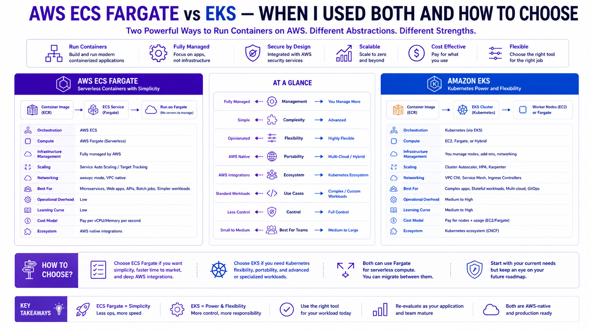

AWS ECS Fargate vs EKS — When I Used Both and How to Choose
AWS Series | Part 10 — Real-world decision frameworks and architectural trade-offs from migrating 40+ workloads to ECS and building a 33-microservice platform on EKS.

TL;DR Comparison
| Feature | ECS Fargate | Amazon EKS |
|---|---|---|
| Abstraction level | AWS-native, higher abstraction | Kubernetes — industry standard |
| Control plane | Fully managed by AWS | Managed masters, self-managed nodes |
| Node management | None — serverless compute | EC2 (managed node groups / Karpenter) or Fargate |
| Networking | AWS VPC native (awsvpc mode) | VPC CNI, Calico, Cilium |
| Service discovery | AWS Cloud Map / ALB | CoreDNS + Kubernetes Services |
| Autoscaling | ECS Service Auto Scaling | HPA, VPA, KEDA, Karpenter |
| Deployment model | Task Definitions + Services | Deployments, StatefulSets, DaemonSets |
| GitOps | Limited (CodePipeline, GitHub Actions) | Native (ArgoCD, Flux) |
| Multi-tenancy | Service-level isolation | Namespace-level isolation |
| Learning curve | Low — AWS-native concepts | High — Kubernetes expertise required |
| Ecosystem | AWS services only | Entire CNCF landscape |
| Cost model | vCPU + memory per second | EC2 instances + control plane ($0.10/hour) |
| Best for | Microservices, lift-and-shift, small teams | Complex platforms, 20+ services, GitOps at scale |
Introduction — Two Real Projects, Two Different Answers
I have not written this post from AWS documentation. I have written it from two production environments I built myself — and the lessons I learned the hard way in both.
At WCC Group, I worked across two distinct initiatives. The first was migrating 40+ on-premises workloads to AWS using AWS Application Migration Service (MGN) — a lift-and-shift to EC2 focused entirely on speed and zero-downtime datacenter decommission. ECS played no part in that migration. The second was a separate greenfield project: architecting an ECS Fargate platform to deploy an internal product across multiple client environments. No legacy to carry, no Kubernetes expertise in the team, and a hard requirement to onboard new clients quickly and consistently. ECS Fargate was the right tool — no nodes to manage, no kubelet to debug, repeatable per-client Terraform modules, and awsvpc networking for clean client isolation.
At Rabobank, I inherited a fraud detection platform built on 33 microservices. The team had GitOps requirements, multi-team ownership of namespaces, complex traffic management between services, Karpenter-driven cost optimisation, and Databricks integration. ECS could not have handled this complexity. The answer was Amazon EKS. It required significantly more investment in platform engineering — but it gave the team the control, ecosystem, and developer experience that a platform of this scale demands.
The honest answer to "ECS or EKS?" is: it depends on the platform you are building, not the technology you prefer. This post gives you the framework to make that call correctly.
1. ECS Fargate — Serverless Containers Done Right
How It Works
ECS (Elastic Container Service) is AWS's native container orchestration service. In Fargate mode, there are no EC2 instances to manage — AWS provisions the compute underneath your containers invisibly. You define what you want to run (the Task Definition) and ECS handles where and how it runs.
ECS Cluster
└── Service (desired count: 3, auto scaling: 1-10)
├── Task (Task Definition: app:v2.1)
│ ├── Container: app (1 vCPU, 2GB RAM)
│ └── Container: log-router (0.1 vCPU, 256MB RAM)
├── Task (running)
└── Task (running)Core Concepts You Must Understand
Task Definition — the blueprint. Defines container images, CPU/memory, environment variables, IAM roles, logging, port mappings, and health checks. Version-controlled — every change creates a new revision.
Service — maintains a desired count of running Tasks. Handles rolling deployments, integrates with ALB for traffic routing, and drives auto scaling.
Cluster — a logical grouping of services. In Fargate mode it is purely a namespace — no underlying infrastructure to manage.
awsvpc networking — every Fargate task gets its own ENI and private IP in your VPC. This means Security Groups apply directly at the task level — not at a shared node level. This is a significant security advantage over traditional EC2-based ECS.
Full ECS Fargate Terraform — Production Pattern
# ECS Cluster
resource "aws_ecs_cluster" "main" {
name = "prod-cluster"
configuration {
execute_command_configuration {
kms_key_id = aws_kms_key.ecs.arn
logging = "OVERRIDE"
log_configuration {
cloud_watch_log_group_name = aws_cloudwatch_log_group.ecs_exec.name
}
}
}
setting {
name = "containerInsights"
value = "enabled" # Container-level metrics in CloudWatch
}
tags = { Name = "prod-cluster" }
}
# Capacity Provider — Fargate + Fargate Spot for cost optimisation
resource "aws_ecs_cluster_capacity_providers" "main" {
cluster_name = aws_ecs_cluster.main.name
capacity_providers = ["FARGATE", "FARGATE_SPOT"]
default_capacity_provider_strategy {
base = 1 # At least 1 task on standard Fargate
weight = 20 # 20% on standard Fargate
capacity_provider = "FARGATE"
}
default_capacity_provider_strategy {
weight = 80 # 80% on Fargate Spot (up to 70% cheaper)
capacity_provider = "FARGATE_SPOT"
}
}
# Task Definition
resource "aws_ecs_task_definition" "app" {
family = "app"
requires_compatibilities = ["FARGATE"]
network_mode = "awsvpc" # Each task gets its own ENI + private IP
cpu = "1024" # 1 vCPU
memory = "2048" # 2 GB RAM
execution_role_arn = aws_iam_role.ecs_execution.arn
task_role_arn = aws_iam_role.ecs_task.arn
# FireLens log router — ship logs to CloudWatch + S3
container_definitions = jsonencode([
{
name = "log-router"
image = "public.ecr.aws/aws-observability/aws-for-fluent-bit:stable"
essential = true
firelensConfiguration = {
type = "fluentbit"
options = { enable-ecs-log-metadata = "true" }
}
logConfiguration = {
logDriver = "awslogs"
options = {
"awslogs-group" = "/ecs/log-router"
"awslogs-region" = var.region
"awslogs-stream-prefix" = "firelens"
}
}
cpu = 64
memory = 128
},
{
name = "app"
image = "${aws_ecr_repository.app.repository_url}:${var.image_tag}"
essential = true
cpu = 960
memory = 1920
portMappings = [{
containerPort = 8080
protocol = "tcp"
}]
environment = [
{ name = "ENV", value = "production" },
{ name = "REGION", value = var.region }
]
# Secrets from Secrets Manager — never pass secrets as env vars directly
secrets = [
{
name = "DB_PASSWORD"
valueFrom = "arn:aws:secretsmanager:${var.region}:${var.account_id}:secret:prod/db/password"
},
{
name = "API_KEY"
valueFrom = "arn:aws:secretsmanager:${var.region}:${var.account_id}:secret:prod/api/key"
}
]
logConfiguration = {
logDriver = "awsfirelens"
options = {
Name = "cloudwatch"
region = var.region
log_group_name = "/ecs/app"
log_stream_prefix = "app/"
auto_create_group = "false"
}
}
healthCheck = {
command = ["CMD-SHELL", "curl -f http://localhost:8080/health || exit 1"]
interval = 30
timeout = 5
retries = 3
startPeriod = 60
}
}
])
tags = { Name = "app-task-definition" }
}
# ECS Service — maintains desired count + rolling deployment
resource "aws_ecs_service" "app" {
name = "app-service"
cluster = aws_ecs_cluster.main.id
task_definition = aws_ecs_task_definition.app.arn
desired_count = 3
# Deployment configuration — rolling update with rollback
deployment_minimum_healthy_percent = 100 # Never drop below full capacity
deployment_maximum_percent = 200 # Allow double capacity during deployment
deployment_circuit_breaker {
enable = true # Automatically roll back on deployment failure
rollback = true
}
# Capacity provider strategy — Fargate Spot for cost savings
capacity_provider_strategy {
base = 1
weight = 20
capacity_provider = "FARGATE"
}
capacity_provider_strategy {
weight = 80
capacity_provider = "FARGATE_SPOT"
}
network_configuration {
subnets = aws_subnet.private[*].id
security_groups = [aws_security_group.ecs_tasks.id]
assign_public_ip = false # Never assign public IPs to Fargate tasks
}
# ALB integration — register tasks with target group
load_balancer {
target_group_arn = aws_lb_target_group.app.arn
container_name = "app"
container_port = 8080
}
# Service discovery — register in Cloud Map for service-to-service communication
service_registries {
registry_arn = aws_service_discovery_service.app.arn
}
# Enable ECS Exec — drop into a running container for debugging
enable_execute_command = true
tags = { Name = "app-service" }
}
# Auto Scaling — scale based on CPU and memory
resource "aws_appautoscaling_target" "ecs" {
max_capacity = 20
min_capacity = 3
resource_id = "service/${aws_ecs_cluster.main.name}/${aws_ecs_service.app.name}"
scalable_dimension = "ecs:service:DesiredCount"
service_namespace = "ecs"
}
resource "aws_appautoscaling_policy" "cpu" {
name = "cpu-scaling"
policy_type = "TargetTrackingScaling"
resource_id = aws_appautoscaling_target.ecs.resource_id
scalable_dimension = aws_appautoscaling_target.ecs.scalable_dimension
service_namespace = aws_appautoscaling_target.ecs.service_namespace
target_tracking_scaling_policy_configuration {
predefined_metric_specification {
predefined_metric_type = "ECSServiceAverageCPUUtilization"
}
target_value = 70.0 # Scale when CPU > 70%
scale_in_cooldown = 300
scale_out_cooldown = 60
}
}
resource "aws_appautoscaling_policy" "memory" {
name = "memory-scaling"
policy_type = "TargetTrackingScaling"
resource_id = aws_appautoscaling_target.ecs.resource_id
scalable_dimension = aws_appautoscaling_target.ecs.scalable_dimension
service_namespace = aws_appautoscaling_target.ecs.service_namespace
target_tracking_scaling_policy_configuration {
predefined_metric_specification {
predefined_metric_type = "ECSServiceAverageMemoryUtilization"
}
target_value = 75.0
scale_in_cooldown = 300
scale_out_cooldown = 60
}
}ECS Service Discovery — Service-to-Service Communication
For microservices that need to call each other directly (without going through an ALB):
# Cloud Map namespace — internal DNS for service discovery
resource "aws_service_discovery_private_dns_namespace" "main" {
name = "internal.prod"
description = "Internal service discovery namespace"
vpc = aws_vpc.main.id
}
# Service discovery entry for the app service
resource "aws_service_discovery_service" "app" {
name = "app"
dns_config {
namespace_id = aws_service_discovery_private_dns_namespace.main.id
dns_records {
ttl = 10
type = "A"
}
routing_policy = "MULTIVALUE"
}
health_check_custom_config {
failure_threshold = 1
}
}
# Result: app.internal.prod → resolves to all healthy task IPs
# Any service can call http://app.internal.prod:8080 directlyScale and Consistency — The Multi-Client Module Pattern
In the WCC project, we needed to deploy the same application stack for multiple clients with total isolation. By wrapping the ECS pattern into a single Terraform module, we could onboard a new client in minutes with a few lines of code. This ensured that every client environment had the same security groups, logging configuration, and auto-scaling rules.
# Multi-client deployment using a standardized ECS module
module "client_a" {
source = "./modules/ecs-platform"
client_name = "client-a"
vpc_id = var.client_a_vpc_id
subnets = var.client_a_subnets
cpu = 1024
memory = 2048
image_tag = "v2.1.0"
}
module "client_b" {
source = "./modules/ecs-platform"
client_name = "client-b"
vpc_id = var.client_b_vpc_id
subnets = var.client_b_subnets
cpu = 512
memory = 1024
image_tag = "v2.0.8" # Clients can be on different versions
}2. Amazon EKS — Kubernetes at Enterprise Scale
Why Kubernetes for Complex Platforms
At Rabobank, the fraud detection platform had requirements that simply could not be met with ECS:
- 33 microservices owned by multiple teams — namespace-level isolation is essential
- GitOps with ArgoCD — Kubernetes is the de facto standard; ECS integration requires custom tooling
- Karpenter for intelligent, cost-optimised node provisioning based on actual pod requirements
- KEDA for event-driven autoscaling tied to SQS queue depth and Kafka consumer lag
- Helm for templated, versioned, reusable infrastructure-as-code at the application layer
- Service mesh (AWS App Mesh / Istio) for mutual TLS between services and fine-grained traffic management
- Custom resource definitions (CRDs) for Databricks operator, Spark operator, and internal platform tooling
ECS is excellent at running containers. EKS is a platform for building platforms.
Full EKS Cluster Terraform — Production Pattern
# EKS Cluster
resource "aws_eks_cluster" "main" {
name = "prod-eks-cluster"
role_arn = aws_iam_role.eks_cluster.arn
version = "1.30"
vpc_config {
subnet_ids = concat(aws_subnet.private[*].id, aws_subnet.public[*].id)
endpoint_private_access = true # kubectl via private endpoint only
endpoint_public_access = false # No public API server endpoint
security_group_ids = [aws_security_group.eks_cluster.id]
}
# Envelope encryption for Kubernetes secrets using KMS
encryption_config {
provider {
key_arn = aws_kms_key.eks.arn
}
resources = ["secrets"]
}
enabled_cluster_log_types = [
"api", # API server audit logs
"audit", # Kubernetes audit logs — required for compliance
"authenticator", # Authentication logs
"controllerManager",
"scheduler"
]
access_config {
authentication_mode = "API_AND_CONFIG_MAP"
bootstrap_cluster_creator_admin_permissions = false # Explicit access entries only
}
tags = { Name = "prod-eks-cluster" }
depends_on = [
aws_iam_role_policy_attachment.eks_cluster_policy,
aws_cloudwatch_log_group.eks
]
}
# EKS Access Entry — IAM roles mapped to Kubernetes RBAC
resource "aws_eks_access_entry" "platform_team" {
cluster_name = aws_eks_cluster.main.name
principal_arn = aws_iam_role.platform_engineer.arn
type = "STANDARD"
}
resource "aws_eks_access_policy_association" "platform_admin" {
cluster_name = aws_eks_cluster.main.name
principal_arn = aws_iam_role.platform_engineer.arn
policy_arn = "arn:aws:eks::aws:cluster-access-policy/AmazonEKSClusterAdminPolicy"
access_scope { type = "cluster" }
}
# Dev team — namespace-scoped access only
resource "aws_eks_access_entry" "dev_team" {
cluster_name = aws_eks_cluster.main.name
principal_arn = aws_iam_role.developer.arn
type = "STANDARD"
}
resource "aws_eks_access_policy_association" "dev_namespace" {
cluster_name = aws_eks_cluster.main.name
principal_arn = aws_iam_role.developer.arn
policy_arn = "arn:aws:eks::aws:cluster-access-policy/AmazonEKSEditPolicy"
access_scope {
type = "namespace"
namespaces = ["fraud-detection", "payments"] # Dev team scoped to their namespaces
}
}Karpenter — Intelligent Node Provisioning
This is the single biggest operational advantage we gained at Rabobank over managed node groups. Karpenter provisions exactly the right EC2 instance type for each workload — not a pre-configured node group that you over-provision "just in case."
# Karpenter IAM Role — needs EC2 permissions to launch instances
resource "aws_iam_role" "karpenter" {
name = "karpenter-controller"
assume_role_policy = jsonencode({
Version = "2012-10-17"
Statement = [{
Effect = "Allow"
Principal = {
Federated = aws_iam_openid_connect_provider.eks.arn
}
Action = "sts:AssumeRoleWithWebIdentity"
Condition = {
StringEquals = {
"${aws_iam_openid_connect_provider.eks.url}:sub" = "system:serviceaccount:karpenter:karpenter"
"${aws_iam_openid_connect_provider.eks.url}:aud" = "sts.amazonaws.com"
}
}
}]
})
}
resource "aws_iam_role_policy_attachment" "karpenter" {
role = aws_iam_role.karpenter.name
policy_arn = aws_iam_policy.karpenter.arn
}
# Karpenter Node Pool — defines what nodes Karpenter can provision
# Applied via kubectl / Helm after cluster creation
# karpenter-nodepool.yaml:
# apiVersion: karpenter.sh/v1
# kind: NodePool
# metadata:
# name: default
# spec:
# template:
# spec:
# nodeClassRef:
# apiVersion: karpenter.k8s.aws/v1
# kind: EC2NodeClass
# name: default
# requirements:
# - key: "karpenter.k8s.aws/instance-category"
# operator: In
# values: ["c", "m", "r"] # Compute, Memory, General purpose
# - key: "karpenter.k8s.aws/instance-cpu"
# operator: In
# values: ["4", "8", "16", "32"]
# - key: "karpenter.sh/capacity-type"
# operator: In
# values: ["spot", "on-demand"] # Prefer Spot, fallback to On-Demand
# - key: "kubernetes.io/arch"
# operator: In
# values: ["amd64", "arm64"] # Support both x86 and Graviton
# disruption:
# consolidationPolicy: WhenEmptyOrUnderutilized
# consolidateAfter: 30s # Bin-pack and remove underutilised nodes fast
# limits:
# cpu: 1000
# memory: 4000GiEKS Add-ons — The Essential Set
# EKS Managed Add-ons — AWS handles version management and patching
locals {
eks_addons = {
vpc-cni = {
version = "v1.18.1-eksbuild.1"
configuration_values = jsonencode({
env = {
ENABLE_PREFIX_DELEGATION = "true" # More IPs per node
WARM_PREFIX_TARGET = "1"
}
})
}
coredns = {
version = "v1.11.1-eksbuild.4"
}
kube-proxy = {
version = "v1.30.0-eksbuild.3"
}
aws-ebs-csi-driver = {
version = "v1.30.0-eksbuild.1"
service_account_role_arn = aws_iam_role.ebs_csi.arn
}
eks-pod-identity-agent = {
version = "v1.3.0-eksbuild.1"
}
}
}
resource "aws_eks_addon" "main" {
for_each = local.eks_addons
cluster_name = aws_eks_cluster.main.name
addon_name = each.key
addon_version = each.value.version
service_account_role_arn = lookup(each.value, "service_account_role_arn", null)
configuration_values = lookup(each.value, "configuration_values", null)
resolve_conflicts_on_update = "PRESERVE"
tags = { Name = "addon-${each.key}" }
}EKS Pod Identity — The Modern Way to Grant AWS Permissions
EKS Pod Identity replaces IRSA (IAM Roles for Service Accounts) as the recommended pattern. Simpler configuration, no OIDC thumbprint management:
# Pod Identity Association — maps a Kubernetes ServiceAccount to an IAM role
resource "aws_eks_pod_identity_association" "fraud_service" {
cluster_name = aws_eks_cluster.main.name
namespace = "fraud-detection"
service_account = "fraud-service"
role_arn = aws_iam_role.fraud_service.arn
}
# The IAM role — Kubernetes pod assumes this role automatically
resource "aws_iam_role" "fraud_service" {
name = "fraud-service-pod-role"
assume_role_policy = jsonencode({
Version = "2012-10-17"
Statement = [{
Effect = "Allow"
Principal = { Service = "pods.eks.amazonaws.com" }
Action = ["sts:AssumeRole", "sts:TagSession"]
}]
})
}3. GitOps with ArgoCD on EKS — The Rabobank Pattern
GitOps was a hard requirement at Rabobank — every change to production must be traceable to a Git commit, peer-reviewed, and auditable. ECS has no native GitOps story. EKS with ArgoCD delivers this out of the box.
# ArgoCD installed via Helm
resource "helm_release" "argocd" {
name = "argocd"
repository = "https://argoproj.github.io/argo-helm"
chart = "argo-cd"
version = "7.3.11"
namespace = "argocd"
create_namespace = true
values = [yamlencode({
server = {
ingress = {
enabled = true
annotations = {
"kubernetes.io/ingress.class" = "alb"
"alb.ingress.kubernetes.io/scheme" = "internal"
"alb.ingress.kubernetes.io/target-type" = "ip"
"alb.ingress.kubernetes.io/certificate-arn" = var.acm_cert_arn
}
}
}
configs = {
params = {
"server.insecure" = false
}
cm = {
"admin.enabled" = "false" # Disable local admin — use SSO only
"oidc.config" = yamlencode({
name = "Okta"
issuer = var.okta_issuer
clientID = var.okta_client_id
clientSecret = "$oidc.okta.clientSecret"
requestedScopes = ["openid", "profile", "email", "groups"]
})
}
}
# High availability ArgoCD — 3 replicas for production
replicaCount = 3
})]
}ArgoCD Application — deploy a microservice from Git:
# fraud-detection-app.yaml — applied by the platform team once per service
apiVersion: argoproj.io/v1alpha1
kind: Application
metadata:
name: fraud-detection-service
namespace: argocd
spec:
project: fraud-detection
source:
repoURL: https://github.com/rabobank/fraud-detection-infra
targetRevision: main
path: services/fraud-detection
helm:
valueFiles:
- values-production.yaml
destination:
server: https://kubernetes.default.svc
namespace: fraud-detection
syncPolicy:
automated:
prune: true # Remove resources deleted from Git
selfHeal: true # Revert manual changes — Git is the source of truth
syncOptions:
- CreateNamespace=true
- ServerSideApply=true
retry:
limit: 5
backoff:
duration: 5s
factor: 2
maxDuration: 3mProduction lesson from Rabobank:selfHeal: trueis essential in regulated environments. Without it, a manualkubectl applyin production bypasses Git review and creates a compliance gap. With selfHeal, any manual change is automatically reverted within seconds — Git is the only source of truth, enforced automatically.
4. Cost Deep-Dive — The Honest Numbers
ECS Fargate Pricing
vCPU: $0.04048/vCPU/hour
Memory: $0.004445/GB/hour
Example — 10 tasks, each 1 vCPU + 2 GB RAM, running 24/7:
vCPU: 10 × 1 × $0.04048 × 730h = $295.50/month
Memory: 10 × 2 × $0.004445 × 730h = $64.90/month
Total: $360.40/month
With 80% Fargate Spot (70% discount):
Standard (20%): 2 tasks × $36.04 = $72.08/month
Spot (80%): 8 tasks × $10.81 = $86.48/month
Total with Spot: $158.56/month — 56% savingEKS Pricing
Control plane: $0.10/hour × 730h = $73.00/month (fixed)
Node group (3× m5.xlarge, 24/7):
3 × $0.192/hour × 730h = $420.48/month
With Karpenter + Spot:
Karpenter provisions m5.xlarge Spot:
3 × $0.057/hour × 730h = $124.89/month
Control plane: = $73.00/month
Total with Karpenter Spot: = $197.89/month
At Rabobank — 33 microservices, ~50 pods:
Without Karpenter: ~$1,800/month (6 m5.2xlarge on-demand)
With Karpenter + Spot: ~$380/month — 79% saving
The Karpenter lesson from Rabobank: Before Karpenter, we provisioned 6
m5.2xlarge nodes to handle peak load — and watched them idle at 20% utilisation at night.
Karpenter replaced this with bin-packed, right-sized, mostly Spot nodes that scale to zero overnight and
provision fresh instances for the morning peak. The saving was significant enough that EKS became cheaper than
ECS Fargate at our scale.
Cost Crossover Point
| Scale | Winner | Reason |
|---|---|---|
| 1-10 services | ECS Fargate | No $73/month control plane, simpler = less engineering cost |
| 10-25 services | Toss-up | Depends on team expertise and GitOps requirements |
| 25+ services | EKS + Karpenter | Karpenter savings outweigh control plane cost, namespace isolation essential |
| Spot-heavy workloads | EKS + Karpenter | Karpenter handles Spot interruption + diversification better |
| Stateful workloads | EKS | StatefulSets + EBS CSI driver handle this natively |
5. Networking — How Each Integrates with VPC
ECS Fargate Networking
Every Fargate task runs in awsvpc mode — each task gets its own ENI, its own private IP, and its own Security Group assignment. This is the cleanest network security model available in AWS container services:
# Security Group — one per service, not shared across tasks
resource "aws_security_group" "fraud_service" {
name = "fraud-service-sg"
vpc_id = aws_vpc.main.id
ingress {
from_port = 8080
to_port = 8080
protocol = "tcp"
security_groups = [aws_security_group.alb.id] # ALB only
}
# Service-to-service: allow from payment service SG
ingress {
from_port = 8080
to_port = 8080
protocol = "tcp"
security_groups = [aws_security_group.payment_service.id]
}
egress {
from_port = 0
to_port = 0
protocol = "-1"
cidr_blocks = ["0.0.0.0/0"]
}
}EKS Networking — VPC CNI + ALB Ingress Controller
# AWS Load Balancer Controller — creates ALBs from Kubernetes Ingress resources
resource "helm_release" "aws_lb_controller" {
name = "aws-load-balancer-controller"
repository = "https://aws.github.io/eks-charts"
chart = "aws-load-balancer-controller"
namespace = "kube-system"
version = "1.8.1"
set {
name = "clusterName"
value = aws_eks_cluster.main.name
}
set {
name = "serviceAccount.annotations.eks\\.amazonaws\\.com/role-arn"
value = aws_iam_role.aws_lb_controller.arn
}
# Use Fargate for the controller itself — no dedicated node needed
set {
name = "tolerations[0].key"
value = "eks.amazonaws.com/compute-type"
}
}Kubernetes Ingress — creates an ALB automatically:
apiVersion: networking.k8s.io/v1
kind: Ingress
metadata:
name: fraud-detection-ingress
namespace: fraud-detection
annotations:
kubernetes.io/ingress.class: alb
alb.ingress.kubernetes.io/scheme: internal
alb.ingress.kubernetes.io/target-type: ip # Route directly to pod IPs
alb.ingress.kubernetes.io/certificate-arn: arn:aws:acm:eu-west-1:123:certificate/xxx
alb.ingress.kubernetes.io/ssl-policy: ELBSecurityPolicy-TLS13-1-2-2021-06
alb.ingress.kubernetes.io/wafv2-acl-arn: arn:aws:wafv2:eu-west-1:123:regional/webacl/xxx
spec:
rules:
- host: fraud-api.internal.rabobank.com
http:
paths:
- path: /
pathType: Prefix
backend:
service:
name: fraud-detection-service
port:
number: 80806. The Decision Framework
How many containerised services do you need to run?
├── 1-10 services?
│ └── ECS Fargate — less complexity, lower operational overhead
└── 10+ services with multi-team ownership?
└── EKS — namespace isolation, RBAC, GitOps are worth the investment
Do you have Kubernetes expertise in the team?
├── YES → EKS (leverage existing skills)
└── NO
├── Timeline < 3 months? → ECS Fargate (faster to production)
└── Timeline > 6 months? → Invest in EKS skills — pays off at scale
Do you need GitOps (ArgoCD/Flux)?
└── YES → EKS (native GitOps ecosystem)
ECS requires custom tooling — significant engineering investment
Do you need advanced autoscaling?
├── CPU/Memory based? → Both work (ECS App Auto Scaling / HPA)
├── Event-driven (SQS depth, Kafka lag)? → EKS + KEDA
└── Cost-optimised node provisioning? → EKS + Karpenter
Do you have stateful workloads?
├── NO → Both work
└── YES → EKS (StatefulSets + EBS CSI driver + PersistentVolumes)
Are you migrating from on-premises quickly?
└── YES → ECS Fargate (lower barrier, faster time-to-production)
Do you need a service mesh (mTLS between services)?
└── YES → EKS (App Mesh, Istio, Linkerd — native support)
Cost at scale?
├── <20 pods → ECS Fargate (no control plane cost)
└── >20 pods → EKS + Karpenter + Spot (savings exceed control plane cost)7. Common Mistakes & Anti-Patterns
Mistake 1: Choosing EKS for a Small Team Because It Sounds More Impressive
Kubernetes is a platform for platform engineers. If your team of 3 engineers spends 40% of their time managing cluster upgrades, debugging kubelet issues, and maintaining Helm charts — you're paying the complexity tax without the benefit. A 5-service startup on ECS Fargate ships faster than the same team wrestling with EKS.
Mistake 2: Running ECS with EC2 Launch Type Instead of Fargate
EC2 launch type means you manage the underlying instances — patching, capacity planning, bin-packing. This is the worst of both worlds: you get ECS's limited Kubernetes ecosystem AND EC2's operational overhead. Unless you have a specific requirement (GPU workloads, custom kernel modules), always use Fargate.
Mistake 3: Not Using Fargate Spot for Non-Critical Workloads
Fargate Spot is up to 70% cheaper than standard Fargate. Spot tasks can be interrupted with a 2-minute warning — but for stateless services with proper graceful shutdown handling, interruptions are transparent to users (ALB drains connections before task termination). Not using Spot for background workers, batch jobs, and dev environments is leaving significant money on the table.
Mistake 4: One EKS Node Group for All Workloads
Running general-purpose services on the same node group as memory-intensive ML workloads or latency-sensitive APIs wastes compute and creates noisy-neighbour problems. Use Karpenter with multiple NodePools — one for general workloads (mixed instance types, Spot), one for ML (GPU instances), one for latency-sensitive (compute-optimised, on-demand, dedicated).
Mistake 5: Not Setting Resource Requests and Limits on EKS Pods
Without resources.requests, Karpenter cannot make accurate node sizing decisions — it
provisions oversized nodes. Without resources.limits, a memory-leaking pod can consume all
memory on a node and trigger an OOM cascade. Always set both:
resources:
requests:
cpu: "500m" # Half a vCPU — what the pod normally uses
memory: "512Mi" # Normal memory usage
limits:
cpu: "2000m" # Allow burst to 2 vCPU
memory: "1Gi" # Hard memory ceiling — OOM kill above thisMistake 6: Not Enabling ECS Exec or kubectl exec for Debugging
Production debugging without shell access to running containers is extremely
painful. Enable ECS Exec (enable_execute_command = true) for ECS and ensure
kubectl exec access is controlled via RBAC on EKS. The alternative is redeploying with debug
logging enabled — slow and risky in production.
Mistake 7: Skipping Container Insights / CloudWatch / Prometheus
Running containers without observability is flying blind. Enable Container Insights on ECS clusters from Day 1. On EKS, deploy the AWS Distro for OpenTelemetry (ADOT) collector or the CloudWatch agent via Helm to ship metrics to CloudWatch and traces to X-Ray.
Architecture Decision Matrix
| Requirement | ECS Fargate | EKS + Karpenter |
|---|---|---|
| Zero node management | ✅ Native | ⚠️ Karpenter handles it |
| GitOps (ArgoCD/Flux) | ❌ Custom tooling needed | ✅ Native |
| Namespace multi-tenancy | ❌ Service-level only | ✅ Native |
| Stateful workloads | ⚠️ EFS only | ✅ EBS + EFS + FSx |
| Service mesh (mTLS) | ⚠️ App Mesh limited | ✅ Istio, Linkerd, App Mesh |
| Event-driven autoscaling | ⚠️ Limited | ✅ KEDA |
| Cost at <20 pods | ✅ No control plane cost | ❌ $73/month control plane |
| Cost at >50 pods | ⚠️ Higher per-pod cost | ✅ Karpenter + Spot wins |
| Learning curve | ✅ Low | ❌ High |
| AWS-native integration | ✅ Deep | ✅ Good (add-ons) |
| CNCF ecosystem | ❌ Limited | ✅ Full access |
| Time to first deployment | ✅ Days | ❌ Weeks |
| Cluster upgrades | ✅ Automatic | ⚠️ Managed but requires planning |
| GPU workloads | ❌ Not supported | ✅ Supported |
| Custom node configuration | ❌ Not possible | ✅ EC2NodeClass customisation |
The Golden Rule
"ECS Fargate when you want to run containers. EKS when you want to build a platform. If your team is smaller than 5 engineers, you have fewer than 15 services, and you don't have Kubernetes expertise — ECS Fargate is almost certainly the right answer and will ship faster. If you have multi-team ownership, GitOps requirements, complex autoscaling needs, stateful workloads, or a platform that other teams build on top of — EKS is worth every hour of investment. The worst decision is choosing EKS because it sounds more impressive, and the second-worst is staying on ECS when your platform has clearly outgrown it."